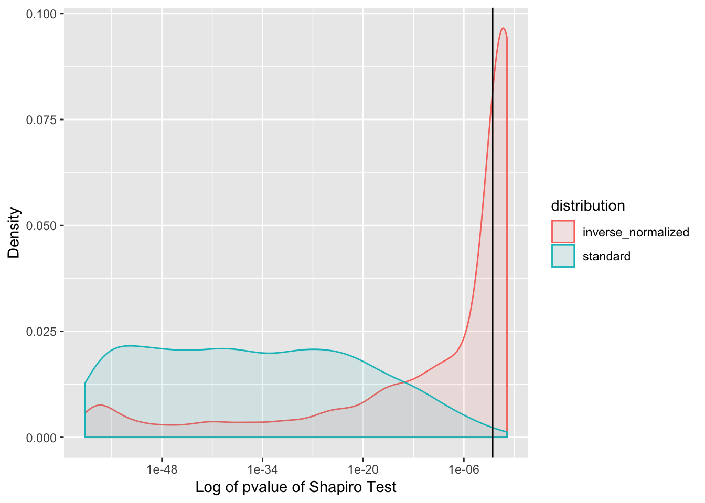

Last updated: 2019-11-12
Checks: 7 0
Knit directory: metabolomics_analysis/
This reproducible R Markdown analysis was created with workflowr (version 1.4.0). The Checks tab describes the reproducibility checks that were applied when the results were created. The Past versions tab lists the development history.
Great! Since the R Markdown file has been committed to the Git repository, you know the exact version of the code that produced these results.
Great job! The global environment was empty. Objects defined in the global environment can affect the analysis in your R Markdown file in unknown ways. For reproduciblity it’s best to always run the code in an empty environment.
The command set.seed(20191108) was run prior to running the code in the R Markdown file. Setting a seed ensures that any results that rely on randomness, e.g. subsampling or permutations, are reproducible.
Great job! Recording the operating system, R version, and package versions is critical for reproducibility.
Nice! There were no cached chunks for this analysis, so you can be confident that you successfully produced the results during this run.
Great job! Using relative paths to the files within your workflowr project makes it easier to run your code on other machines.
Great! You are using Git for version control. Tracking code development and connecting the code version to the results is critical for reproducibility. The version displayed above was the version of the Git repository at the time these results were generated.
Note that you need to be careful to ensure that all relevant files for the analysis have been committed to Git prior to generating the results (you can use wflow_publish or wflow_git_commit). workflowr only checks the R Markdown file, but you know if there are other scripts or data files that it depends on. Below is the status of the Git repository when the results were generated:
Ignored files:
Ignored: .Rproj.user/
Ignored: workflowr.Rproj
Untracked files:
Untracked: code/load_imputed_data.R
Untracked: code/regress_out_dates.R
Untracked: code/regress_out_dates.sh
Untracked: code/regress_out_dates_inverse_normalize.sh
Unstaged changes:
Deleted: docs/.nojekyll
Note that any generated files, e.g. HTML, png, CSS, etc., are not included in this status report because it is ok for generated content to have uncommitted changes.
These are the previous versions of the R Markdown and HTML files. If you’ve configured a remote Git repository (see ?wflow_git_remote), click on the hyperlinks in the table below to view them.
| File | Version | Author | Date | Message |
|---|---|---|---|---|
| Rmd | 0bd3e7e | meliao | 2019-11-12 | Start workflowr project. |
data_dir <- "~/projects/metabolomics/data/date_controlled/"
resid_df <- read.csv(file.path(data_dir, 'imputed_data_date_controlled_resids.txt'))
coeff_df <- read.csv(file.path(data_dir, 'imputed_data_date_controlled_coefficients.txt'))
pval_df <- read.csv(file.path(data_dir, 'imputed_data_date_controlled_pvals.txt'))resid_df <- read.csv('~/projects/metabolomics/data/date_controlled/imputed_data_date_controlled_resids.txt')
rownames(resid_df) <- resid_df$X
resid_df$X <- NULLtestnormality = function(df, print_bad_cols = FALSE, threshold = 0.01)
{
cc=0
pvec = rep(NA,ncol(df))
for(ii in 1:ncol(df)){
pp = shapiro.test(df[,ii])$p
pvec[ii] = pp
if(pp < threshold){
if(print_bad_cols){
print("-----")
print(colnames(df)[ii])
print(pp)
}
cc=cc+1
}
}
print(paste0("Non-normal columns according to Shapiro < ", threshold))
print(cc)
pvec
}
resid_df_normality_pvec <- testnormality(resid_df)[1] "Non-normal columns according to Shapiro < 0.01"
[1] 1257I ran the same regression but with the columns of the metabolomics data matrix inverse-normalized. I’ll load the data and run the Shapiro test.
resid_inv_norm_df <- read.csv(file.path(data_dir, 'imputed_data_date_controlled_inv_normalized_resids.txt'))
rownames(resid_inv_norm_df) <- resid_inv_norm_df$X
resid_inv_norm_df$X <- NULL
inv_norm_pvec <- testnormality(resid_inv_norm_df)[1] "Non-normal columns according to Shapiro < 0.01"
[1] 597When viewing the next plot, I had to remind myself that smaller p-values indicate that the sample is not normally distributed. The x axis plots p-values on the log scale, so the smaller p-values are on the left.
A vertical line at the \(\alpha = 0.01\) threshold is drawn
shapiro_pval_df <- data.frame(standard = (resid_df_normality_pvec),
inverse_normalized = (inv_norm_pvec))
shapiro_pval_df <- shapiro_pval_df %>% pivot_longer(everything(), names_to = 'distribution', values_to = 'pval')
plt <- (ggplot(data = shapiro_pval_df, aes(pval, fill = distribution, color = distribution))
+ geom_density(alpha = 0.1)
+ labs(x = "Log of pvalue of Shapiro Test",
y = "Density"
)
+ geom_vline(xintercept = 0.01)
+ scale_x_log10()
)
plt
rownames(pval_df) <- pval_df$X
pval_df$X <- NULL
pval_df_t <-data.frame(t(pval_df))
summary(pval_df_t) PARAM_RUN_DAY1 PARAM_RUN_DAY10 PARAM_RUN_DAY11
Min. :0.000000 Min. :0.000000 Min. :0.000000
1st Qu.:0.000000 1st Qu.:0.000000 1st Qu.:0.000000
Median :0.000000 Median :0.000000 Median :0.000000
Mean :0.066134 Mean :0.074915 Mean :0.080991
3rd Qu.:0.001708 3rd Qu.:0.003379 3rd Qu.:0.003738
Max. :0.991408 Max. :0.989862 Max. :0.992748
PARAM_RUN_DAY12 PARAM_RUN_DAY13 PARAM_RUN_DAY14
Min. :0.00000 Min. :0.000000 Min. :0.000000
1st Qu.:0.00000 1st Qu.:0.000000 1st Qu.:0.000000
Median :0.00000 Median :0.000000 Median :0.000000
Mean :0.06772 Mean :0.065295 Mean :0.071800
3rd Qu.:0.00217 3rd Qu.:0.001962 3rd Qu.:0.003144
Max. :0.99141 Max. :0.992748 Max. :0.996323
PARAM_RUN_DAY15 PARAM_RUN_DAY16 PARAM_RUN_DAY17
Min. :0.000000 Min. :0.000000 Min. :0.000000
1st Qu.:0.000000 1st Qu.:0.000000 1st Qu.:0.000000
Median :0.000000 Median :0.000000 Median :0.000000
Mean :0.065317 Mean :0.055606 Mean :0.073871
3rd Qu.:0.002152 3rd Qu.:0.000365 3rd Qu.:0.003117
Max. :0.993347 Max. :0.999601 Max. :0.992748
PARAM_RUN_DAY18 PARAM_RUN_DAY19 PARAM_RUN_DAY2
Min. :0.0000000 Min. :0.000000 Min. :0.0000000
1st Qu.:0.0000000 1st Qu.:0.000000 1st Qu.:0.0000000
Median :0.0000000 Median :0.000000 Median :0.0000000
Mean :0.0677855 Mean :0.083898 Mean :0.0564560
3rd Qu.:0.0003941 3rd Qu.:0.004164 3rd Qu.:0.0004061
Max. :0.9981274 Max. :0.998220 Max. :0.9927484
PARAM_RUN_DAY20 PARAM_RUN_DAY21 PARAM_RUN_DAY22
Min. :0.00000 Min. :0.000000 Min. :0.000000
1st Qu.:0.00000 1st Qu.:0.000000 1st Qu.:0.000000
Median :0.00000 Median :0.000000 Median :0.000000
Mean :0.06744 Mean :0.055563 Mean :0.068166
3rd Qu.:0.00180 3rd Qu.:0.001463 3rd Qu.:0.002538
Max. :0.99141 Max. :0.992748 Max. :0.999769
PARAM_RUN_DAY23 PARAM_RUN_DAY24 PARAM_RUN_DAY25
Min. :0.0000000 Min. :0.000000 Min. :0.000000
1st Qu.:0.0000000 1st Qu.:0.000000 1st Qu.:0.000000
Median :0.0000000 Median :0.000000 Median :0.000000
Mean :0.0572151 Mean :0.060281 Mean :0.069569
3rd Qu.:0.0000107 3rd Qu.:0.001403 3rd Qu.:0.004712
Max. :0.9947916 Max. :0.992748 Max. :0.990414
PARAM_RUN_DAY26 PARAM_RUN_DAY27 PARAM_RUN_DAY28
Min. :0.000000 Min. :0.00000 Min. :0.000000
1st Qu.:0.000000 1st Qu.:0.00000 1st Qu.:0.000000
Median :0.000000 Median :0.00000 Median :0.000000
Mean :0.068934 Mean :0.06643 Mean :0.061178
3rd Qu.:0.002593 3rd Qu.:0.00178 3rd Qu.:0.002668
Max. :0.992748 Max. :0.99275 Max. :0.992748
PARAM_RUN_DAY29 PARAM_RUN_DAY3 PARAM_RUN_DAY30
Min. :0.000000 Min. :0.0000000 Min. :0.000000
1st Qu.:0.000000 1st Qu.:0.0000000 1st Qu.:0.000000
Median :0.000000 Median :0.0000000 Median :0.000000
Mean :0.077949 Mean :0.0588121 Mean :0.067884
3rd Qu.:0.007475 3rd Qu.:0.0004547 3rd Qu.:0.002767
Max. :0.999805 Max. :0.9998053 Max. :0.995523
PARAM_RUN_DAY31 PARAM_RUN_DAY32 PARAM_RUN_DAY33
Min. :0.000000 Min. :0.0000000 Min. :0.000000
1st Qu.:0.000000 1st Qu.:0.0000000 1st Qu.:0.000000
Median :0.000000 Median :0.0000000 Median :0.000000
Mean :0.062721 Mean :0.0638594 Mean :0.060129
3rd Qu.:0.001888 3rd Qu.:0.0006737 3rd Qu.:0.001026
Max. :0.991408 Max. :0.9967696 Max. :0.994884
PARAM_RUN_DAY34 PARAM_RUN_DAY35 PARAM_RUN_DAY36
Min. :0.000000 Min. :0.000000 Min. :0.000000
1st Qu.:0.000000 1st Qu.:0.000000 1st Qu.:0.000000
Median :0.000000 Median :0.000000 Median :0.000000
Mean :0.066501 Mean :0.079299 Mean :0.077552
3rd Qu.:0.002837 3rd Qu.:0.002402 3rd Qu.:0.002739
Max. :0.991223 Max. :0.992748 Max. :0.992748
PARAM_RUN_DAY37 PARAM_RUN_DAY38 PARAM_RUN_DAY39
Min. :0.0000000 Min. :0.0000000 Min. :0.0000000
1st Qu.:0.0000000 1st Qu.:0.0000000 1st Qu.:0.0000000
Median :0.0000000 Median :0.0000000 Median :0.0000000
Mean :0.0642630 Mean :0.0570177 Mean :0.0569340
3rd Qu.:0.0005231 3rd Qu.:0.0008659 3rd Qu.:0.0006247
Max. :0.9927484 Max. :0.9981414 Max. :0.9878003
PARAM_RUN_DAY4 PARAM_RUN_DAY40 PARAM_RUN_DAY41
Min. :0.0000000 Min. :0.0000000 Min. :0.000000
1st Qu.:0.0000000 1st Qu.:0.0000000 1st Qu.:0.000000
Median :0.0000000 Median :0.0000000 Median :0.000000
Mean :0.0601528 Mean :0.0611598 Mean :0.077220
3rd Qu.:0.0006195 3rd Qu.:0.0007125 3rd Qu.:0.002657
Max. :0.9927484 Max. :0.9998096 Max. :0.992908
PARAM_RUN_DAY42 PARAM_RUN_DAY43 PARAM_RUN_DAY44
Min. :0.000000 Min. :0.0000000 Min. :0.000000
1st Qu.:0.000000 1st Qu.:0.0000000 1st Qu.:0.000000
Median :0.000000 Median :0.0000000 Median :0.000000
Mean :0.065784 Mean :0.0670902 Mean :0.072097
3rd Qu.:0.001228 3rd Qu.:0.0007858 3rd Qu.:0.001553
Max. :0.998958 Max. :0.9930708 Max. :0.993071
PARAM_RUN_DAY45 PARAM_RUN_DAY46 PARAM_RUN_DAY47
Min. :0.000000 Min. :0.000000 Min. :0.000000
1st Qu.:0.000000 1st Qu.:0.000000 1st Qu.:0.000000
Median :0.000000 Median :0.000000 Median :0.000000
Mean :0.074173 Mean :0.069303 Mean :0.085931
3rd Qu.:0.003922 3rd Qu.:0.002119 3rd Qu.:0.004849
Max. :0.998983 Max. :0.996637 Max. :0.999814
PARAM_RUN_DAY48 PARAM_RUN_DAY49 PARAM_RUN_DAY5
Min. :0.000000 Min. :0.00000 Min. :0.0000000
1st Qu.:0.000000 1st Qu.:0.00000 1st Qu.:0.0000000
Median :0.000000 Median :0.00000 Median :0.0000000
Mean :0.083237 Mean :0.07415 Mean :0.0602819
3rd Qu.:0.004931 3rd Qu.:0.00351 3rd Qu.:0.0008887
Max. :0.991790 Max. :0.99324 Max. :0.9969023
PARAM_RUN_DAY50 PARAM_RUN_DAY6 PARAM_RUN_DAY7
Min. :0.0000000 Min. :0.000000 Min. :0.000000
1st Qu.:0.0000000 1st Qu.:0.000000 1st Qu.:0.000000
Median :0.0000011 Median :0.000000 Median :0.000000
Mean :0.1036790 Mean :0.060245 Mean :0.072142
3rd Qu.:0.0181334 3rd Qu.:0.002359 3rd Qu.:0.001949
Max. :0.9950294 Max. :0.992748 Max. :0.992748
PARAM_RUN_DAY8 PARAM_RUN_DAY9
Min. :0.000000 Min. :0.000000
1st Qu.:0.000000 1st Qu.:0.000000
Median :0.000000 Median :0.000000
Mean :0.069535 Mean :0.073675
3rd Qu.:0.002782 3rd Qu.:0.003184
Max. :0.998183 Max. :0.993734 The pvalues are tricky to plot in a useful way. They are concentrated around zero, with a lot of outliers uniformely distributed between 0 and 1.
pval_df_t$metabolite <- rownames(pval_df_t)
pval_df_long <- pval_df_t %>% pivot_longer( -c(metabolite), names_to = 'Day', values_to = 'pval')
plt <- (ggplot(data = pval_df_long, aes(metabolite, Day, fill = pval))
+ geom_tile()
+ theme(axis.text.x = element_blank(),
axis.ticks.x = element_blank(),
axis.ticks.y = element_blank(),
axis.text.y = element_blank())
)
# plt
plt_2 <- (ggplot(data = pval_df_long, aes(pval))
+ geom_histogram(bins = 200))
# plt_2
sessionInfo()R version 3.5.1 (2018-07-02)
Platform: x86_64-apple-darwin15.6.0 (64-bit)
Running under: macOS 10.14.5
Matrix products: default
BLAS: /Library/Frameworks/R.framework/Versions/3.5/Resources/lib/libRblas.0.dylib
LAPACK: /Library/Frameworks/R.framework/Versions/3.5/Resources/lib/libRlapack.dylib
locale:
[1] en_US.UTF-8/en_US.UTF-8/en_US.UTF-8/C/en_US.UTF-8/en_US.UTF-8
attached base packages:
[1] stats graphics grDevices utils datasets methods base
other attached packages:
[1] forcats_0.4.0 stringr_1.4.0 dplyr_0.8.3 purrr_0.3.2
[5] readr_1.3.1 tidyr_1.0.0 tibble_2.1.1 ggplot2_3.1.1
[9] tidyverse_1.2.1
loaded via a namespace (and not attached):
[1] Rcpp_1.0.1 cellranger_1.1.0 plyr_1.8.4 pillar_1.3.1
[5] compiler_3.5.1 git2r_0.26.1 workflowr_1.4.0 tools_3.5.1
[9] zeallot_0.1.0 digest_0.6.18 lubridate_1.7.4 jsonlite_1.6
[13] evaluate_0.14 lifecycle_0.1.0 nlme_3.1-137 gtable_0.3.0
[17] lattice_0.20-35 pkgconfig_2.0.2 rlang_0.4.0 cli_1.1.0
[21] rstudioapi_0.10 yaml_2.2.0 haven_2.1.1 xfun_0.9
[25] withr_2.1.2 xml2_1.2.2 httr_1.4.0 knitr_1.25
[29] hms_0.4.2 generics_0.0.2 fs_1.3.1 vctrs_0.2.0
[33] rprojroot_1.3-2 grid_3.5.1 tidyselect_0.2.5 glue_1.3.1
[37] R6_2.4.0 readxl_1.3.1 rmarkdown_1.15 modelr_0.1.5
[41] magrittr_1.5 whisker_0.4 backports_1.1.4 scales_1.0.0
[45] htmltools_0.3.6 rvest_0.3.4 assertthat_0.2.1 colorspace_1.4-1
[49] labeling_0.3 stringi_1.4.3 lazyeval_0.2.2 munsell_0.5.0
[53] broom_0.5.2 crayon_1.3.4